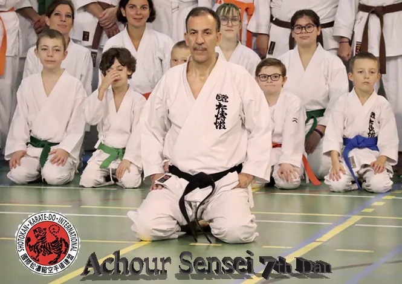

Information de 2021. Elle n’est plus à jour. Voir l’information actuelle

A partir du 15 Octobre 2021, L’accés au Complexe Poseidon et au CLUB de Karaté est limité aux titulaire du PASS SANITAIRE, d’un test PCR negatif de moins de 48h et cela à partir de 16 ans. Cette restriction est valide pour tout le monde y compris les visiteurs et les parents. Le controle se fera à l’entrée du Complexe.
COVID Safety pass is necessary starting 15/10/2021. Only the holders of the Covid safe ticket or Negative PCR (-48h) will be allowed access to the Poseidon complex and to the club. this restrictions is valid for all above 16 years old, athletes, members, visitors, parents… Secrurity check at the entrance of the Building.
Don’t forget your ID card, Ne pas oublier votre carte d’identité.
Ce sont les nouvelles directives de la région Bruxelles capitale jusqu’à nouvel ordre.